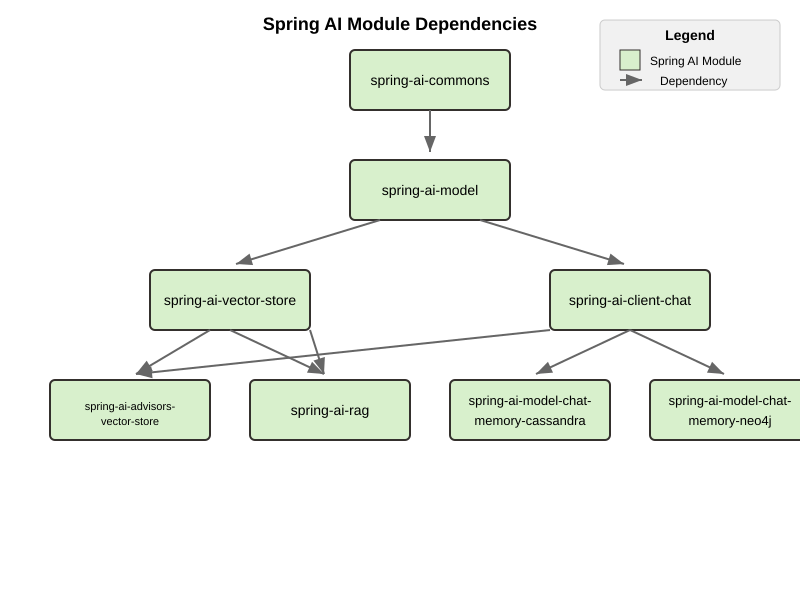

升级说明 #
升级到 1.0.0-SNAPSHOT #
概述 #
1.0.0-SNAPSHOT 版本对构件 ID、软件包名称和模块结构进行了重大更改。本节提供有关使用 SNAPSHOT 版本的具体指导。
添加快照存储库 #
要使用 1.0.0-SNAPSHOT 版本，您需要将快照存储库添加到构建文件中。有关详细说明，请参阅入门指南中的 [ “快照 - 添加快照存储库”](getting-started.html#snapshots-add-snapshot-repositories) 部分。
更新依赖管理 #
在构建配置中，将 Spring AI BOM 版本更新为 1.0.0-SNAPSHOT 。有关配置依赖项管理的详细说明，请参阅入门指南中的 [
“依赖项管理”](getting-started.html#dependency-management) 部分。
工件 ID、包和模块变更 #
1.0.0-SNAPSHOT 包括对工件 ID、包名称和模块结构的更改。
详情请参考：- [ 通用神器 ID 变更](#common-artifact-id-changes)
升级到 1.0.0-RC1 #
您可以使用 OpenRewrite 配方自动升级到 1.0.0-RC1。此配方有助于应用此版本所需的许多代码更改。您可以在 [ Arconia Spring AI 迁移]( https://github.com/arconia-io/arconia-migrations/blob/main/docs/spring-ai.md)中找到配方和使用说明。
重大变化 #
聊天客户端和顾问 #
影响最终用户代码的主要变化是：
- 在 VectorStoreChatMemoryAdvisor 中：
- 常量 CHAT_MEMORY_RETRIEVE_SIZE_KEY 已重命名为 TOP_K 。
- 常量 DEFAULT_CHAT_MEMORY_RESPONSE_SIZE （值：100）已重命名为 DEFAULT_TOP_K ，其新默认值为 20。
- 常量 CHAT_MEMORY_RETRIEVE_SIZE_KEY 已重命名为 TOP_K 。
- 常量 DEFAULT_CHAT_MEMORY_RESPONSE_SIZE （值：100）已重命名为 DEFAULT_TOP_K ，其新默认值为 20。
- 常量 CHAT_MEMORY_CONVERSATION_ID_KEY 已重命名为 CONVERSATION_ID ，并从 AbstractChatMemoryAdvisor 移至 ChatMemory 接口。请更新您的导入以使用 org.springframework.ai.chat.memory.ChatMemory.CONVERSATION_ID 。
顾问中的自包含模板 #
执行提示增强的内置顾问已更新为使用自包含模板。目标是使每个顾问能够执行模板操作，而不会影响或受其他顾问中的模板和提示决策的影响。
如果您为以下顾问提供自定义模板，则需要更新它们以确保包含所有预期的占位符。
- QuestionAnswerAdvisor 需要一个带有以下占位符的模板（查看更多详细信息 ）：
- 用于接收用户问题的 query 占位符。
- 一个 question_answer_context 占位符来接收检索到的上下文。
- 用于接收用户问题的 query 占位符。
- 一个 question_answer_context 占位符来接收检索到的上下文。
- PromptChatMemoryAdvisor 需要一个带有以下占位符的模板（查看更多详细信息 ）：
- 接收原始系统消息的 instructions 占位符。
- 一个 memory 占位符，用于接收检索到的对话内存。
- 接收原始系统消息的 instructions 占位符。
- 一个 memory 占位符，用于接收检索到的对话内存。
- VectorStoreChatMemoryAdvisor 需要一个带有以下占位符的模板（查看更多详细信息 ）：
- 接收原始系统消息的 instructions 占位符。
- long_term_memory 占位符用于接收检索到的对话记忆。
- 接收原始系统消息的 instructions 占位符。
- long_term_memory 占位符用于接收检索到的对话记忆。
可观察性 #
- 重构内容观察以使用日志记录而不是跟踪（ ca843e8 ）
- 用日志处理程序替换内容观察过滤器
- 重命名配置属性以更好地反映其用途：
- 为跟踪感知日志记录添加了 TracingAwareLoggingObservationHandler
- 已将 micrometer-tracing-bridge-otel 替换为 micrometer-tracing
- 删除基于事件的跟踪，转而采用直接记录
- 消除了对 OTel SDK 的直接依赖
- 将观察属性中的 includePrompt 重命名为 logPrompt （在 ChatClientBuilderProperties 、 ChatObservationProperties 和 ImageObservationProperties 中）
- 用日志处理程序替换内容观察过滤器
- 重命名配置属性以更好地反映其用途：
- 为跟踪感知日志记录添加了 TracingAwareLoggingObservationHandler
- 已将 micrometer-tracing-bridge-otel 替换为 micrometer-tracing
- 删除基于事件的跟踪，转而采用直接记录
- 消除了对 OTel SDK 的直接依赖
- 将观察属性中的 includePrompt 重命名为 logPrompt （在 ChatClientBuilderProperties 、 ChatObservationProperties 和 ImageObservationProperties 中）
聊天内存存储库模块和自动配置重命名 #
我们通过在整个代码库中添加存储库后缀，标准化了聊天记忆组件的命名模式。此更改会影响 Cassandra、JDBC 和 Neo4j 实现，从而影响到工件 ID、Java 包名称和类名称，以方便区分。
工件 ID #
所有与内存相关的工件现在都遵循一致的模式：
- spring-ai-model-chat-memory- → spring-ai-model-chat-memory-repository-
- spring-ai-autoconfigure-model-chat-memory- → spring-ai-autoconfigure-model-chat-memory-repository-
- spring-ai-starter-model-chat-memory- → spring-ai-starter-model-chat-memory-repository-
Java 包 #
- 包路径现在包括 .repository. 段
- 例如： org.springframework.ai.chat.memory.jdbc → org.springframework.ai.chat.memory.repository.jdbc
配置类 #
- 主自动配置类现在使用 Repository 后缀
- 例如： JdbcChatMemoryAutoConfiguration → JdbcChatMemoryRepositoryAutoConfiguration
特性 #
- 配置属性已从 spring.ai.chat.memory.
… 重命名为 spring.ai.chat.memory.repository. …
需要迁移：
- 更新您的 Maven/Gradle 依赖项以使用新的工件 ID。
- 更新使用旧包或类名的任何导入、类引用或配置。
消息聚合器重构 #
变化 #
- MessageAggregator 类已从 spring-ai-client-chat 模块中的 org.springframework.ai.chat.model 包移至 spring-ai-model 模块（相同的包名）
- 已从 MessageAggregator 中移除了 aggregateChatClientResponse 方法，并将其移至 org.springframework.ai.chat.client 包中的新类 ChatClientMessageAggregator
迁移指南 #
如果您直接使用 MessageAggregator 中的 aggregateChatClientResponse 方法，则需要使用新的 ChatClientMessageAggregator 类：
// Before
new MessageAggregator().aggregateChatClientResponse(chatClientResponses, aggregationHandler);
// After
new ChatClientMessageAggregator().aggregateChatClientResponse(chatClientResponses, aggregationHandler);
不要忘记添加适当的导入：
import org.springframework.ai.chat.client.ChatClientMessageAggregator;
沃森 #
Watson AI 模型已被移除，因为它基于较旧的文本生成模型，而该模型被认为已经过时，因为有新的聊天生成模型可用。希望 Watson 能够在 Spring AI 的未来版本中重新出现。
MoonShot 和 QianFan #
Moonshot 和 Qianfan 已被移除，因为它们在中国境外无法访问。它们已被移至 Spring AI 社区代码库。
移除向量存储 #
- 删除了 HanaDB 矢量存储自动配置（ f3b4624 ）
内存管理 #
- 删除了 CassandraChatMemory 实现（ 11e3c8f ）
- 简化了聊天内存顾问层次结构并删除了已弃用的 API（ 848a3fd ）
- 删除了 JdbcChatMemory 中的弃用内容 ( 356a68f )
- 重构聊天内存存储库工件以提高清晰度（ 2d517ee ）
- 重构聊天内存存储库自动配置和 Spring Boot 启动器以提高清晰度（ f6dba1b ）
消息和模板 API #
- 删除了已弃用的 UserMessage 构造函数 ( 06edee4 )
- 删除了已弃用的 PromptTemplate 构造函数 ( 722c77e )
- 从 Media 中删除了已弃用的方法 ( 228ef10 )
- 重构 StTemplateRenderer：将 supportStFunctions 重命名为 validStFunctions ( 0e15197 )
- 移动 TemplateRender 接口后将其剩余的内容删除（ 52675d8 ）
其他客户端 API 变更 #
- 删除了 ChatClient 和 Advisors 中的弃用内容 ( 4fe74d8 )
- 删除了 OllamaApi 和 AnthropicApi 中的弃用部分 ( 46be898 )
软件包结构变化 #
- 删除了 spring-ai-model ( ebfa5b9 ) 中的包间依赖循环
- 将 MessageAggregator 移至 spring-ai-model 模块（ 54e5c07 ）
依赖项 #
- 删除了 spring-ai-openai 中未使用的 json-path 依赖项（ 9de13d1 ）
行为变化 #
- 为 Azure OpenAI 添加了 Entra ID 身份管理，并具有干净的自动配置（ 3dc86d3 ）
常规清理 #
- 删除了所有弃用的代码（ 76bee8c ）和（ b6ce7f3 ）
升级到 1.0.0-M8 #
您可以使用 OpenRewrite 配方自动升级到 1.0.0-M8。此配方有助于应用此版本所需的许多代码更改。您可以在 [ Arconia Spring AI 迁移]( https://github.com/arconia-io/arconia-migrations/blob/main/docs/spring-ai.md)中找到配方和使用说明。
重大变化 #
从 Spring AI 1.0 M7 升级到 1.0 M8 时，之前注册过工具回调的用户会遇到重大变更，导致工具调用功能静默失败。这尤其会影响使用已弃用的 tools() 方法的代码。
例子 #
以下是在 M7 中可以运行但在 M8 中不再按预期运行的代码示例：
// This worked in M7 but silently fails in M8
ChatClient chatClient = new OpenAiChatClient(api)
.tools(List.of(
new Tool("get_current_weather", "Get the current weather in a given location",
new ToolSpecification.ToolParameter("location", "The city and state, e.g. San Francisco, CA", true))
))
.toolCallbacks(List.of(
new ToolCallback("get_current_weather", (toolName, params) -> {
// Weather retrieval logic
return Map.of("temperature", 72, "unit", "fahrenheit", "description", "Sunny");
})
));
解决方案 #
解决方案是使用 toolSpecifications() 方法，而不是已弃用的 tools() 方法：
// This works in M8
ChatClient chatClient = new OpenAiChatClient(api)
.toolSpecifications(List.of(
new Tool("get_current_weather", "Get the current weather in a given location",
new ToolSpecification.ToolParameter("location", "The city and state, e.g. San Francisco, CA", true))
))
.toolCallbacks(List.of(
new ToolCallback("get_current_weather", (toolName, params) -> {
// Weather retrieval logic
return Map.of("temperature", 72, "unit", "fahrenheit", "description", "Sunny");
})
));
删除的实现和 API #
内存管理 #
- 删除了 CassandraChatMemory 实现（ 11e3c8f ）
- 简化了聊天内存顾问层次结构并删除了已弃用的 API（ 848a3fd ）
- 删除了 JdbcChatMemory 中的弃用内容 ( 356a68f )
- 重构聊天内存存储库工件以提高清晰度（ 2d517ee ）
- 重构聊天内存存储库自动配置和 Spring Boot 启动器以提高清晰度（ f6dba1b ）
客户端 API #
- 删除了 ChatClient 和 Advisors 中的弃用内容 ( 4fe74d8 )
- 聊天客户端工具调用的重大变更（ 5b7849d ）
- 删除了 OllamaApi 和 AnthropicApi 中的弃用部分 ( 46be898 )
消息和模板 API #
- 删除了已弃用的 UserMessage 构造函数 ( 06edee4 )
- 删除了已弃用的 PromptTemplate 构造函数 ( 722c77e )
- 从 Media 中删除了已弃用的方法 ( 228ef10 )
- 重构 StTemplateRenderer：将 supportStFunctions 重命名为 validStFunctions ( 0e15197 )
- 移动 TemplateRender 接口后将其剩余的内容删除（ 52675d8 ）
模型实现 #
- 删除了 Watson 文本生成模型 ( 9e71b16 )
- 删除了千帆代码（ bfcaad7 ）
- 删除了 HanaDB 矢量存储自动配置（ f3b4624 ）
- 从 OpenAiApi 中删除了 deepseek 选项 ( 59b36d1 )
软件包结构变化 #
- 删除了 spring-ai-model ( ebfa5b9 ) 中的包间依赖循环
- 将 MessageAggregator 移至 spring-ai-model 模块（ 54e5c07 ）
依赖项 #
- 删除了 spring-ai-openai 中未使用的 json-path 依赖项（ 9de13d1 ）
行为变化 #
可观察性 #
-
重构内容观察以使用日志记录而不是跟踪（ ca843e8 ）
- 用日志处理程序替换内容观察过滤器
- 重命名配置属性以更好地反映其用途：
- 为跟踪感知日志记录添加了 TracingAwareLoggingObservationHandler
- 已将 micrometer-tracing-bridge-otel 替换为 micrometer-tracing
- 删除基于事件的跟踪，转而采用直接记录
- 消除了对 OTel SDK 的直接依赖
- 将观察属性中的 includePrompt 重命名为 logPrompt （在 ChatClientBuilderProperties 、 ChatObservationProperties 和 ImageObservationProperties 中）
-
用日志处理程序替换内容观察过滤器
-
重命名配置属性以更好地反映其用途：
-
为跟踪感知日志记录添加了 TracingAwareLoggingObservationHandler
-
已将 micrometer-tracing-bridge-otel 替换为 micrometer-tracing
-
删除基于事件的跟踪，转而采用直接记录
-
消除了对 OTel SDK 的直接依赖
-
将观察属性中的 includePrompt 重命名为 logPrompt （在 ChatClientBuilderProperties 、 ChatObservationProperties 和 ImageObservationProperties 中）
-
为 Azure OpenAI 添加了 Entra ID 身份管理，并具有干净的自动配置（ 3dc86d3 ）
常规清理 #
- 删除了 1.0.0-M8 中的所有弃用内容 ( 76bee8c )
- 常规弃用清理（ b6ce7f3 ）
升级到 1.0.0-M7 #
变更概述 #
Spring AI 1.0.0-M7 是 RC1 和 GA 版本之前的最后一个里程碑版本。它对工件 ID、包名称和模块结构进行了一些重要更改，这些更改将在最终版本中保留。
工件 ID、包和模块变更 #
1.0.0-M7 包含与 1.0.0-SNAPSHOT 相同的结构变化。
详情请参考：- [ 通用神器 ID 变更](#common-artifact-id-changes)
MCP Java SDK 升级至 0.9.0 #
Spring AI 1.0.0-M7 现使用 MCP Java SDK 0.9.0 版本，该版本与之前的版本相比有显著变化。如果您在应用程序中使用 MCP，则需要更新代码以适应这些变化。
主要变化包括：
接口重命名 #
- DefaultMcpSession → McpClientSession 或 McpServerSession
- 所有 *Registration 类别 → *Specification 类别
服务器创建更改 #
- 使用 McpServerTransportProvider 代替 ServerMcpTransport
// Before
ServerMcpTransport transport = new WebFluxSseServerTransport(objectMapper, "/mcp/message");
var server = McpServer.sync(transport)
.serverInfo("my-server", "1.0.0")
.build();
// After
McpServerTransportProvider transportProvider = new WebFluxSseServerTransportProvider(objectMapper, "/mcp/message");
var server = McpServer.sync(transportProvider)
.serverInfo("my-server", "1.0.0")
.build();
处理程序签名变更 #
所有处理程序现在都接收 exchange 参数作为其第一个参数：
// Before
.tool(calculatorTool, args -> new CallToolResult("Result: " + calculate(args)))
// After
.tool(calculatorTool, (exchange, args) -> new CallToolResult("Result: " + calculate(args)))
通过交易所与客户互动 #
以前在服务器上可用的方法现在可以通过交换对象访问：
// Before
ClientCapabilities capabilities = server.getClientCapabilities();
CreateMessageResult result = server.createMessage(new CreateMessageRequest(...));
// After
ClientCapabilities capabilities = exchange.getClientCapabilities();
CreateMessageResult result = exchange.createMessage(new CreateMessageRequest(...));
Roots 变更处理程序 #
// Before
.rootsChangeConsumers(List.of(
roots -> System.out.println("Roots changed: " + roots)
))
// After
.rootsChangeHandlers(List.of(
(exchange, roots) -> System.out.println("Roots changed: " + roots)
))
有关迁移 MCP 代码的完整指南，请参阅 [ MCP 迁移指南]( https://github.com/spring-projects/spring-ai/blob/main/spring-ai-docs/src/main/antora/modules/ROOT/pages/mcp-migration.adoc) 。
启用/禁用模型自动配置 #
先前用于启用/禁用模型自动配置的配置属性已被删除：
默认情况下，如果在类路径中找到模型提供程序（例如 OpenAI、Ollama），则会启用其针对相关模型类型（聊天、嵌入等）的相应自动配置。如果同一模型类型存在多个提供程序（例如， spring-ai-openai-spring-boot-starter 和 spring-ai-ollama-spring-boot-starter ），您可以使用以下属性来选择应启用哪个提供程序的自动配置，从而有效地禁用该特定模型类型的其他提供程序。
要完全禁用特定模型类型的自动配置，即使只存在一个提供程序，也请将相应的属性设置为与类路径上的任何提供程序都不匹配的值（例如， none 或 disabled ）。
您可以参考 [[SpringAIModels](https://github.com/spring-projects/spring-ai/blob/main/spring-ai-model/src/main/java/org/springframework/ai/model/SpringAIModels.java)](https://github.com/spring-projects/spring-ai/blob/main/spring-ai-model/src/main/java/org/springframework/ai/model/[SpringAIModels](https://github.com/spring-projects/spring-ai/blob/main/spring-ai-model/src/main/java/org/springframework/ai/model/SpringAIModels.java).java) 枚举以获取知名提供程序值的列表。
利用人工智能实现自动升级 #
您可以使用 Claude Code CLI 工具通过提供的提示自动将升级过程升级到 1.0.0-M7：
跨版本的常见变更 #
神器 ID 变更 #
Spring AI 启动器工件的命名模式已更改。您需要根据以下模式更新依赖项：
- 模型启动器： spring-ai-{model}-spring-boot-starter → spring-ai-starter-model-{model}
- 矢量商店启动器： spring-ai-{store}-store-spring-boot-starter → spring-ai-starter-vector-store-{store}
- MCP 启动器： spring-ai-mcp-{type}-spring-boot-starter → spring-ai-starter-mcp-{type}
示例 #
Spring AI 自动配置工件的变更 #
Spring AI 自动配置已从单个整体式构件更改为每个模型、向量存储和其他组件的单独自动配置构件。此更改旨在最大限度地减少不同版本依赖库（例如 Google Protocol Buffers、Google RPC 等）冲突的影响。通过将自动配置分离为特定于组件的构件，您可以避免引入不必要的依赖项，并降低应用程序中发生版本冲突的风险。
原始的整体工件不再可用：
<!-- NO LONGER AVAILABLE -->
<dependency>
<groupId>org.springframework.ai</groupId>
<artifactId>spring-ai-spring-boot-autoconfigure</artifactId>
<version>${project.version}</version>
</dependency>
相反，每个组件现在都有自己的自动配置工件，遵循以下模式：
- 模型自动配置： spring-ai-autoconfigure-model-{model}
- 矢量存储自动配置： spring-ai-autoconfigure-vector-store-{store}
- MCP 自动配置： spring-ai-autoconfigure-mcp-{type}
新的自动配置工件示例 #
软件包名称变更 #
您的 IDE 应该协助重构到新的包位置。
- KeywordMetadataEnricher 和 SummaryMetadataEnricher 已从 org.springframework.ai.transformer 移至 org.springframework.ai.chat.transformer 。
- Content 、 MediaContent 和 Media 已从 org.springframework.ai.model 移至 org.springframework.ai.content 。
模块结构 #
该项目的模块和构件结构经历了重大变化。之前， spring-ai-core 包含所有核心接口，但现在已拆分为专门的领域模块，以减少应用程序中不必要的依赖。

基础模块，不依赖其他 Spring AI 模块。包含：- 核心领域模型（ Document 、 TextSplitter ）- JSON 实用程序和资源处理 - 结构化日志记录和可观察性支持
提供 AI 能力抽象： - ChatModel 、 EmbeddingModel 和 ImageModel 等接口
- 消息类型和提示模板
- 函数调用框架（
ToolDefinition、ToolCallback） - 内容过滤和观察支持
spring-ai-矢量存储 #
统一向量数据库抽象： - 用于相似性搜索的 VectorStore 接口 - 使用类似 SQL 表达式的高级过滤 - 用于内存使用的 SimpleVectorStore - 对嵌入的批处理支持
spring-ai-客户端聊天 #
高级对话式 AI API： - ChatClient 接口 - 通过 ChatMemory 实现对话持久化
- 使用
OutputConverter进行响应转换 - 基于顾问的拦截
- 同步和反应流支持
桥梁与 RAG 的矢量存储聊天： - QuestionAnswerAdvisor ：将上下文注入提示 - VectorStoreChatMemoryAdvisor ：存储/检索对话历史记录
spring-ai-model-聊天-内存-cassandra #
Apache Cassandra ChatMemory 持久性： - CassandraChatMemory 实现 - 使用 Cassandra 的 QueryBuilder 的类型安全 CQL ==== spring-ai-model-chat-memory-neo4j
Neo4j 图形数据库持久化聊天对话。
春艾拉格 #
检索增强生成的综合框架：- RAG 管道的模块化架构 - RetrievalAugmentationAdvisor 作为主要入口点 - 具有可组合组件的函数式编程原理
依赖结构 #
依赖层次可以概括为：
- spring-ai-commons （基金会）
- spring-ai-model （依赖于 commons）
- spring-ai-vector-store 和 spring-ai-client-chat （均依赖于模型）
- spring-ai-advisors-vector-store 和 spring-ai-rag （依赖于客户端聊天和矢量存储）
- spring-ai-model-chat-memory-* 模块（依赖于客户端聊天）
ToolContext 更改 #
ToolContext 类已得到增强，支持显式和隐式工具解析。工具现在可以：
从 1.0.0-M7 开始，仅当在提示中明确请求或在调用中明确包含工具时，工具才会包含在对模型的调用中。
此外， ToolContext 类现已被标记为 final，无法再进行扩展。它原本不应被子类化。您可以在实例化 ToolContext 时以 Map<String, Object> 的形式添加所需的所有上下文数据。更多信息，请参阅
文档。
升级到 1.0.0-M6 #
Usage 接口和 DefaultUsage 实现的变更 #
Usage 接口及其默认实现 DefaultUsage 经历了以下变化：
所需行动 #
- 将所有对 getGenerationTokens() 的调用替换为 getCompletionTokens()
- 更新 DefaultUsage 构造函数调用：
JSON Ser/Deser 更改 #
虽然 M6 保留了 generationTokens 字段 JSON 反序列化的向后兼容性，但该字段将在 M7 中被移除。所有使用旧字段名的持久化 JSON 文档都应更新为使用 completionTokens 。
新 JSON 格式的示例：
{
"promptTokens": 100,
"completionTokens": 50,
"totalTokens": 150
}
工具调用的 FunctionCallingOptions 用法的变更 #
每个 ChatModel 实例在构造时都接受一个可选的 ChatOptions 或 FunctionCallingOptions 实例，可用于配置用于调用模型的默认工具。
1.0.0-M6 之前：
- 通过默认 FunctionCallingOptions 实例的 functions() 方法传递的任何工具都包含在从该 ChatModel 实例对模型的每次调用中，可能会被运行时选项覆盖。
- 通过默认 FunctionCallingOptions 实例的 functionCallbacks() 方法传递的任何工具仅可用于运行时动态解析（请参阅工具解析 ），但除非明确请求，否则永远不会包含在对模型的任何调用中。
启动 1.0.0-M6：
- 通过 functions() 方法或默认 FunctionCallingOptions 的 functionCallbacks() 传递的任何工具 实例现在以相同的方式处理：它会包含在该 ChatModel 实例对模型的每次调用中，并可能被运行时选项覆盖。这样，在模型调用中包含工具的方式就保持一致，并避免了由于 functionCallbacks() 和所有其他选项之间的行为差异而导致的混淆。
如果您希望使工具可用于运行时动态解析，并且仅在明确请求时将其包含在模型的聊天请求中，则可以使用[ 工具解析](api/tools.html#_tool_resolution)中描述的策略之一。
删除已弃用的 Amazon Bedrock 聊天模型 #
从 1.0.0-M6 开始，Spring AI 已过渡到使用 Amazon Bedrock 的 Converse API 来实现 Spring AI 中的所有聊天对话。除 Cohere 和 Titan 的 Embedding 模型外，所有 Amazon Bedrock Chat 模型均已移除。
使用 Spring Boot 3.4.2 进行依赖管理的变更 #
Spring AI 更新后使用 Spring Boot 3.4.2 进行依赖管理。您可以参考[ 此处]( https://github.com/spring-projects/spring-boot/blob/v3.4.2/spring-boot-project/spring-boot-dependencies/build.gradle)了解 Spring Boot 3.4.2 管理的依赖项
所需行动 #
- 如果您要升级到 Spring Boot 3.4.2，请务必参考此文档，了解配置 REST 客户端所需的更改。需要注意的是，如果您的类路径中没有 HTTP 客户端库，这可能会导致使用 JdkClientHttpRequestFactory ，而之前应该使用 SimpleClientHttpRequestFactory 。要切换到使用 SimpleClientHttpRequestFactory ，您需要设置 spring.http.client.factory=simple 。
- 如果您使用的是不同版本的 Spring Boot（例如 Spring Boot 3.3.x）并且需要特定版本的依赖项，则可以在构建配置中覆盖它。
矢量存储 API 变更 #
在 1.0.0-M6 版本中， VectorStore 接口中的 delete 方法已修改为 void 操作，而不是返回 Optional<Boolean> 。如果您的代码之前检查了 delete 操作的返回值，则需要移除此检查。现在，如果删除失败，该操作会抛出异常，从而提供更直接的错误处理。
1.0.0-M6 之前： #
Optional<Boolean> result = vectorStore.delete(ids);
if (result.isPresent() && result.get()) {
// handle successful deletion
}
在 1.0.0-M6 及更高版本中： #
vectorStore.delete(ids);
// deletion successful if no exception is thrown
升级到 1.0.0.M5 #
- 为了保持一致性，向量构建器已被重构。
- 当前 VectorStore 实现构造函数已被弃用，请使用构建器模式。
- VectorStore 实现包已移至唯一的包名称，以避免跨工件发生冲突。例如， org.springframework.ai.vectorstore 移至 org.springframework.ai.pgvector.vectorstore 。
升级到 1.0.0.RC3 #
- 便携式聊天选项（ frequencyPenalty 、 presencePenalty 、 temperature 、 topP ）的类型已从 Float 更改为 Double 。
升级到 1.0.0.M2 #
- Chroma 矢量存储的配置前缀已从 spring.ai.vectorstore.chroma.store 更改为 spring.ai.vectorstore.chroma ，以与其他矢量存储的命名约定保持一致。
- 能够 initialize-schema 属性的默认值现已设置为 false 。这意味着，如果希望在应用程序启动时创建模式，则应用程序现在需要明确选择在受支持的向量存储上启用模式初始化。并非所有向量存储都支持此属性。有关更多详细信息，请参阅相应的向量存储文档。以下是当前不支持 initialize-schema 属性的向量存储。
- 哈娜
- 松果
- 威维特
- 在《侏罗纪世界 2》基岩版中，聊天选项 countPenalty 、 frequencyPenalty 和 presencePenalty
已重命名为 countPenaltyOptions 、 frequencyPenaltyOptions 和 presencePenaltyOptions 。此外，聊天选项 stopSequences 的类型已从 String[] 更改为 List
。 - 在 Azure OpenAI 中，聊天选项 frequencyPenalty 和 presencePenalty 的类型 已从 Double 更改为 Float ，与所有其他实现一致。
升级到 1.0.0.M1 #
在即将发布 1.0.0 M1 的过程中，我们做出了几项重大变更。抱歉，这是为了更好的体验！
ChatClient 变更 #
此次重大改动在于，将“旧版” ChatClient 功能迁移至 ChatModel 。“新版” ChatClient 现在接受 ChatModel 的实例。此举旨在支持流畅的 API，以类似于 Spring 生态系统中其他客户端类（例如 RestClient 、 WebClient 和 JdbcClient ）的风格创建和执行提示。有关流畅 API 的更多信息，请参阅
JavaDoc，正式的参考文档即将发布。
我们将“旧”的 `````ModelClient` 重命名为 Model ，并重命名了实现类，例如将 ``ImageClient`` 重命名为 ImageModel。Model实现代表了在 Spring AI API 和底层 AIModel```` API 之间进行转换的可移植层。
一个新的包 model ，包含接口和基类，支持为任何输入/输出数据类型组合创建 AI 模型客户端。目前，聊天和图像模型包已实现此功能。我们将很快将嵌入包更新到此新模型。
一种新的“可移植选项”设计模式。我们希望在 ModelCall 中尽可能地实现跨不同聊天 AI 模型的可移植性。它包含一组通用的生成选项，以及特定于模型提供者的选项。我们使用了一种“鸭子类型”方法。模型包中的 ModelOptions 是一个标记接口，指示此类的实现将为模型提供选项。请参阅 ImageOptions ，它是一个子接口，定义了跨所有文本→图像 ImageModel 实现的可移植选项。StabilityAiImageOptions 和 OpenAiImageOptions 则提供了特定于每个模型提供者的选项。所有选项类均通过流畅的 API 构建器创建，所有选项类都可以传递到可移植的 ImageModel API 中。这些选项数据类型用于 ImageModel 实现 StabilityAiImageOptions 自动配置/配置属性。
神器名称变更 #
重命名的 POM 工件名称： - spring-ai-qdrant → spring-ai-qdrant-store - spring-ai-cassandra → spring-ai-cassandra-store - spring-ai-pinecone → spring-ai-pinecone-store - spring-ai-redis → spring-ai-redis-store - spring-ai-qdrant → spring-ai-qdrant-store - spring-ai-gemfire → spring-ai-gemfire-store - spring-ai-azure-vector-store-spring-boot-starter → spring-ai-azure-store-spring-boot-starter - spring-ai-redis-spring-boot-starter → spring-ai-starter-vector-store-redis
升级到 0.8.1 #
之前的 spring-ai-vertex-ai 已重命名为 spring-ai-vertex-ai-palm2 并且 spring-ai-vertex-ai-spring-boot-starter 已重命名为 spring-ai-vertex-ai-palm2-spring-boot-starter 。
因此，您需要将依赖关系从
<dependency>
<groupId>org.springframework.ai</groupId>
<artifactId>spring-ai-vertex-ai</artifactId>
</dependency>
到
<dependency>
<groupId>org.springframework.ai</groupId>
<artifactId>spring-ai-vertex-ai-palm2</artifactId>
</dependency>
并且 Palm2 型号的相关 Boot 启动器已从
<dependency>
<groupId>org.springframework.ai</groupId>
<artifactId>spring-ai-vertex-ai-spring-boot-starter</artifactId>
</dependency>
到
<dependency>
<groupId>org.springframework.ai</groupId>
<artifactId>spring-ai-vertex-ai-palm2-spring-boot-starter</artifactId>
</dependency>
- 重命名课程（2024 年 3 月 1 日）
升级到 0.8.0 #
2024 年 1 月 24 日更新 #
- 将 prompt 和 messages 以及 metadata 包移动到 org.springframework.ai.chat 的子包中
- 新功能是文本转图片客户端。类包括 OpenAiImageModel 和 StabilityAiImageModel 。使用方法请参阅集成测试，文档即将发布。
- 一个新的包 model ，包含接口和基类，支持为任何输入/输出数据类型组合创建 AI 模型客户端。目前，聊天和图像模型包已实现此功能。我们将很快将嵌入包更新到此新模型。
- 一种新的“可移植选项”设计模式。我们希望在 ModelCall 中尽可能地实现跨不同聊天 AI 模型的可移植性。它包含一组通用的生成选项，以及特定于模型提供者的选项。我们使用了一种“鸭子类型”方法。模型包中的 ModelOptions 是一个标记接口，指示此类的实现将为模型提供选项。请参阅 ImageOptions ，它是一个子接口，定义了跨所有文本→图像 ImageModel 实现的可移植选项。StabilityAiImageOptions 和 OpenAiImageOptions 则提供了特定于每个模型提供者的选项。所有选项类均通过流畅的 API 构建器创建，所有选项类都可以传递到可移植的 ImageModel API 中。这些选项数据类型用于 ImageModel 实现 StabilityAiImageOptions 自动配置/配置属性。
2024 年 1 月 13 日更新 #
以下 OpenAi 自动配置聊天属性已更改
- 从 spring.ai.openai.model 到 spring.ai.openai.chat.options.model 。
- 从 spring.ai.openai.temperature 到 spring.ai.openai.chat.options.temperature 。
查找有关 OpenAi 属性的更新文档： [ docs.spring.io/spring-ai/reference/api/chat/openai-chat.html](https:// docs.spring.io/spring-ai/reference/api/chat/openai-chat.html)
2023年12月27日更新 #
将 SimplePersistentVectorStore 和 InMemoryVectorStore 合并为 SimpleVectorStore * 将 InMemoryVectorStore 替换为 SimpleVectorStore
2023年12月20日更新 #
重构 Ollama 客户端及相关类和包名
- 将 org.springframework.ai.ollama.client.OllamaClient 替换为 org.springframework.ai.ollama.OllamaModelCall。
- OllamaChatClient 方法签名已改变。
- 将 org.springframework.ai.autoconfigure.ollama.OllamaProperties 重命名为 org.springframework.ai.model.ollama.autoconfigure.OllamaChatProperties ，并将后缀更改为： spring.ai.ollama.chat 。部分属性也进行了修改。
2023年12月19日更新 #
重命名 AiClient 及相关类和包名称
- 将 AiClient 重命名为 ChatClient
- 将 AiResponse 重命名为 ChatResponse
- 将 AiStreamClient 重命名为 StreamingChatClient
- 将包 org.sf.ai.client 重命名为 org.sf.ai.chat
重命名工件 ID
- 嵌入到 spring-ai-transformers 中的 transformers-embedding
将 Maven 模块从顶级目录和 embedding-clients 端子目录移动到单个 models 目录下。
2023年12月1日 #
我们正在转换项目的组 ID：
- 发件人 ： org.springframework.experimental.ai
- 至 ： org.springframework.ai
工件仍将托管在快照存储库中，如下所示。
主分支将迁移至 0.8.0-SNAPSHOT 版本。该版本将在一两周内不稳定。如果您不想使用最新版，请使用 0.7.1-SNAPSHOT 版本。
您可以像以前一样访问 0.7.1-SNAPSHOT 工件，并且仍然可以访问 0.7.1-SNAPSHOT 文档 。